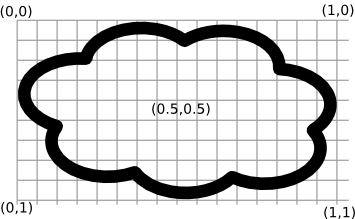
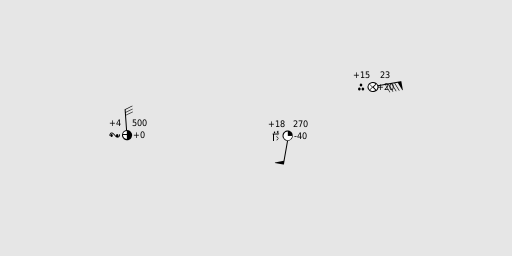

6.2 Announcement¶
- Authors:
Project Steering Committee
- Released:
2012-11-14
The MapServer Team is pleased to announce the long awaited release of MapServer 6.2.0 after an extensive beta phase.
After the 6.0 release that introduced important changes in key components under the hood of the MapServer core, this 6.2 release brings a large number of new features that are summarized in this document.
Major New Features in MapServer 6.2¶
MapServer Suite¶
This is the first joint release between MapServer 6.2, TinyOWS 1.1, and MapCache 1.0, and is the first step towards a fully-fledged MapServer “Suite” integrating these 3 components. A source code archive containing all 3 components can be found in the download links.
MapServer CGI and MapScript 6.2.0 The MapServer web mapping engine that has been at the core of the project since the beginning.
See also
WFS-T: TinyOWS 1.1 TinyOWS is a lightweight and fast implementation of the OGC WFS-T specification. Web Feature Service (WFS) allows to query and to retrieve features, and the transactional profile (WFS-T) then allows to insert, update or delete such features.
From a technical point of view WFS-T is a Web Service API in front of a spatial database; TinyOWS is deeply tied to PostgreSQL/PostGIS.
See also
Tiling: MapCache 1.0
MapCache is a high performance tiling server, that runs in native code either as a FastCGI, an Apache module, or an Nginx module. It supports a wide variety of protocols (WMTS, TMS, WMS, VirtualEarth, KML, …) and storage backends (Disk, SQlite, Memcache, GeoTIFF files, BerkeleyBD, …), and provides options for dynamically responding to client requests by assembling cached tiles.
See also
INSPIRE View Services¶
MapServer 6.2 is INSPIRE View Service compliant, i.e. supports the provision of an INSPIRE View Service compliant WMS Server.
See also
Mask Layers¶
Mask layers are used to “mask out” part of a given layer, to only represent data that intersect features from another layer. This can be typically used on land parcels, to only display a base satellite image on the areas covered by the parcels of a specific owner/customer.
Two layers are used in combination to activate this feature. The first layer is used to render the features that will be used as a mask. It will typically use a FILTER to only render a select number of features:
layer
name "countries"
status off
class
expression ("[FIPS]" = "EZ")
style
color 0 0 0
end
end
end
Note two things:
The layer is set to STATUS OFF, as we do not want it rendered on the final map itself. In some use cases this might be set to STATUS ON.
We have setup an EXPRESSION to only render the country who’s code is “EZ”. In a parcel scenario, this would typically be a list of parcels or the id of a parcel owner.
The second layer is the layer that will be masked:
layer
status on
name "naturalearth"
mask "countries"
type raster
end
With these two layers, our “naturalearth” raster layer will only be rendered on the pixels that intersect the “EZ” country from our countries layer.
This masking feature can be used on all the renderers that work on pixel data, i.e. not for the pdf or svg renderers. In the case where the masked layer contains labels, only the labels who’s anchor falls inside the mask will be rendered. The actual label text may itself overlap outside of the masked area.
See also
Mask renderer test mapfile and Mask renderer resulting image
{kind=link}
Precise Symbol Placement¶
Traditionally, MapServer centers a marker symbol on the point it should be rendered to. ANCHORPOINT is a new SYMBOL level keyword that describes where the given symbol should be anchored.
SYMBOL
NAME "foo"
TYPE TRUETYPE
ANCHORPOINT 0 0 #will anchor the symbol on it's top-left
ANCHORPOINT 0.5 0.5 #default, will center the symbol
ANCHORPOINT 1 1 #will anchor the symbol on it's bottom right
...
END

{kind=link}
Complex Multi Label/Symbol Symbology¶
Some cartographic representations require juxtaposing multiple symbols and/or labels in order to obtain a complex final symbol. Typically such needs can arise in the meteorological field when creating observation maps, resulting in this kind of symbology:

In order to render these kind of symbols while avoiding collisions with neighbouring symbols, MapServer CLASS elements now support multiple LABEL children, and the LABEL element supports an EXPRESSION filter determining whether the label should be displayed or not. Inside a LABEL, a new FORCE GROUP parameter determines if the current label is allowed to intersect other labels from the same feature or not, and multiple STYLE blocks can be used to render graphic symbols instead of or alongside the text. Note that this new feature will in practice make heavy use of attribute binding to control symbol sizes and orientations.
See also
Vector Fields¶
MapServer can render vector fields based off data from GDAL supported raster formats containing u and v bands.

In order to support rendering arrowheads, the STYLE object now supports a POLAROFFSET r theta entry, where the offset is given in polar coordinates (i.e distance and bearing) rather than cartesian coordinates as for plain OFFSET.
See also
the UVRASTER RFC, the test uvraster mapfile and the resulting uvraster test image
{kind=link}
Label Leader Offsetting¶
For densely labelled maps, MapServer now supports offsetting a label with respect to it’s original anchorpoint if the original location resulted in a collision with an already present label. An optional line can also be rendered to link the rendered text to it’s original feature location.

In order to be able to offset complex symbols as defined previously, LABEL leaders are defined at the CLASS level in their own LEADER block:
class
...
leader
maxdistance 30
gridstep 5
style
color 0 0 0
width 1
end
end
label
...
end
end
The configuration sets what is the maximum distance a label can be offsetted from its original location, and the density of the grid where possible label positions are sampled when testing for collisions. The optional STYLE block is used to render the line drawn from the feature to the offsetted label position.
Note that computing the positions of offsetted labels is computationally heavy and may increase rendering times. To mitigate this, you can either apply this offsetting to a select class of features, and/or diminish the the leader maxdistance, and/or augment the leader gridstep.
See also
View a Labels leader test mapfile or head to the LEADER object documentation to download sample data with mapfile
SVG Symbology¶
Along with the traditional ELLIPSE, VECTOR, PIXMAP and TRUETYPE symbols, MapServer 6.2 now supports SVG symbols directly, opening up new symbology usages with scalable and multicolor complex markers. SVG symbols are defined very classically by
SYMBOL
NAME "my-svg-symbol"
TYPE SVG
IMAGE "/path/to/svgfile.svg"
END
Multiple Font Support¶
No single truetype font contains all the glyphs of all the scripts of the world. When rendering worldwide maps, it is thus needed to be able to specify multiple font files from which to extract glyphs from. You can now give the LABEL’s FONT a comma separated list of fontset keys to try from, for each glyph to render MapServer will test each font in turn until the requested glyph is found.
LABEL
TYPE TRUETYPE
FONT "vera,arialuni,cjk,khmer"
...
END
{kind=link}
Minor New Features in MapServer 6.2¶
WMS Dimension Support
MapServer’s WMS server now supports ELEVATION and DIM_* dimensions in addition to the already existing TIME support. Head over to the WMS dimension documentation for more info.
Stable Hatching
MapServer’s HATCH symbol will now create hatches that are contiguous across adjacent features and across different tiles.
XMP Metadata Support
RFC and documentation
Support for Named Grouped Layers
The functionality of wms_layer_group is extended to support named group layers as needed by the INSPIRE View Service. If a layer with the same name as used in wms_layer_group is found it is treated as named group and if no layer with this name is found as unnamed group as before.
See also
Support for Generating Geospatial PDFs
Initial Gap Support for Line Patterns
The line pattern used to style lines can now be precisely offsetted with respect to the start of the line feature, allowing stable combinations of dashed patterns
General Speedups and Memory Usage Optimizations
Queries sent to postgis backend have been optimized to exercise eventual indexes that might have been set on the time column.
The Postgis driver cuts down on the dynamic memory allocations necessary for simple features.
The labelcache rendering phase has been sped up and consumes less memory.
If using proj version 4.8 or newer, MapServer will no longer use a thread lock before entering proj functions.
{kind=link}
Noteworthy Changes Which Could Affect Existing Applications¶
Unix Build Procedure
The configure script now accepts the traditional –prefix argument to determine where the libraries and executables should be installed.
Running make install as a privileged user is now required after a successful compilation, and the previous method of copying the mapserv binary from the source directory to the webserver’s cgi-bin directory is highly discouraged. Instead, copy or symlink the installed binary from $prefix/bin.
The libmapserver library is now built as a shared library by default, instead of being statically linked in the mapserv, map2img or mapscript libraries.
Installing multiple instances (with different capabilities for now, or for multiple versions in the future) can/must be done by specifying different –prefix entries for each instance, e.g.:
$ ./configure --without-gd --prefix=/opt/ms-62-nogd $ make && sudo make install $ ln -s /opt/ms-62-nogd/bin/mapserv /usr/lib/cgi-bin/mapserv $ make clean $ ./configure --with-gd --prefix=/opt/ms-62-gd $ make && sudo make install $ ln -s /opt/ms-62-gd/bin/mapserv /usr/lib/cgi-bin/mapserv-62-gd
PHP Mapscript builds are now enabled by configuring with –with-php[=/path/to/php-config]
Python Mapscript builds are now enabled by configuring with –enable-python-mapscript and eventually –with-python=/path/to/bin/python for non-standard python installs
GD support is now optional and disabled by default
The GD library is now an optional dependency and isn’t enabled by default. If –with-gd is not supplied to ./configure, GD/* outputformats will fall back to native AGG rendering.
ANNOTATION Layers are deprecated
Annotation layers are deprecated in 6.2 and will probably be removed in a future version. Identical functionality can be obtained by adding LABEL level STYLE blocks, and do not require loading the datasets twice in two different layers as was the case with ANNOTATION layers.
Note
MultiLabel Symbology and Offsetted labels are not supported on ANNOTATION layers.
Support for GDAL older than 1.5.0 has been dropped
Migration Guide¶
CGI: Aside from the build procedure changes detailed above, there are no backwards compatibility issues we are aware of.
MapScript: There is at least one incompatibility that has been encountered with MapScript vs the support for multiple label objects in a class. In 6.0 and older, label was an immutable member of the class object, and a single label was always allocated as part of the classObj. In 6.2, there is no label allocated in the class object by default and your MapScript code (python, etc.) has to create new label objects and add them to the class object. Three new methods were added to the classObj in MapScript to handle this: getLabel, addLabel, removeLabel. Existing scripts need to be updated or risk silent failures as SWIG MapScript (at least in python) does not complain on invalid access to the label member of the classObj.
Source Code Download¶
The source for this release can be downloaded at:
or:
for MapServer 6.2.0:
for TinyOWS 1.1.0:
for MapCache 1.0.0:
for MapServer Suite 12.11 (all three components in a single archive):
Binary Distributions¶
Binary distributions will be available in the coming days:
MS4W users will soon be able to upgrade to this MapServer 6.2.0 release: https://ms4w.com
Ubuntu binaries for lucid, precise and quantal are also built and available in the unstable PPA of UbuntuGIS. See details and instructions at: https://trac.osgeo.org/ubuntugis/
RHEL and CentOS 5.6 TODO
OpenSUSE rpm binaries are available from Open Build Service (Application:Geo) official repository. There is also a One-Click Installer.
The other binary distributions listed in the download page should also be updated with binaries for the new release shortly.
Thanks¶
The MapServer team would like to thank Météo-France for funding a number of the new features present in this release.
Finally, thank you to all of the users, developers, and supporters of MapServer. Enjoy!
The MapServer Team